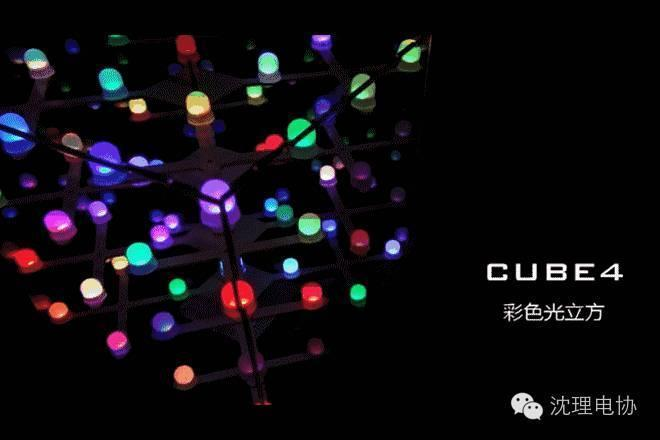
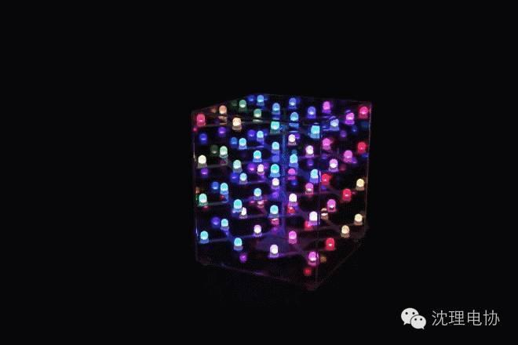
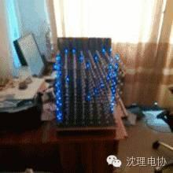
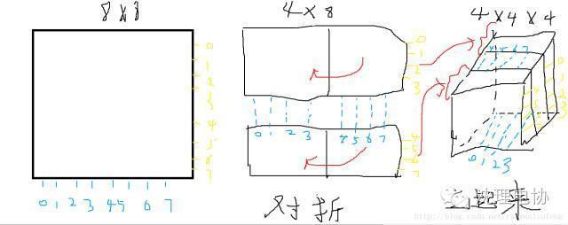
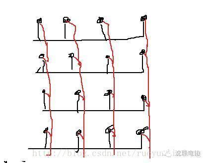
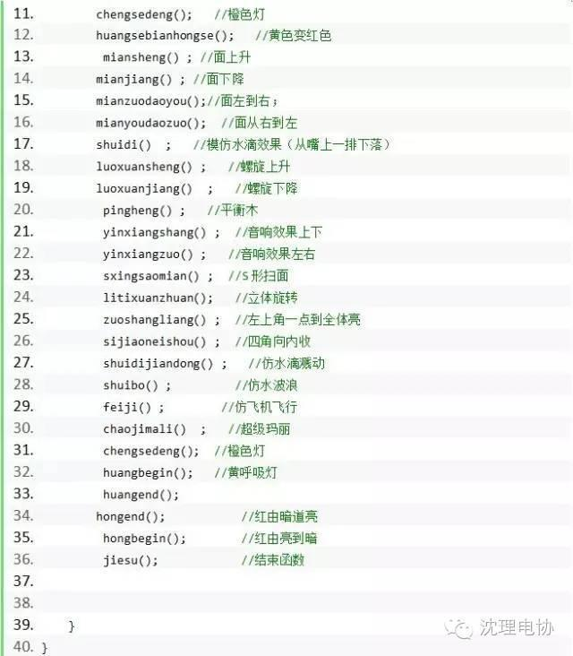
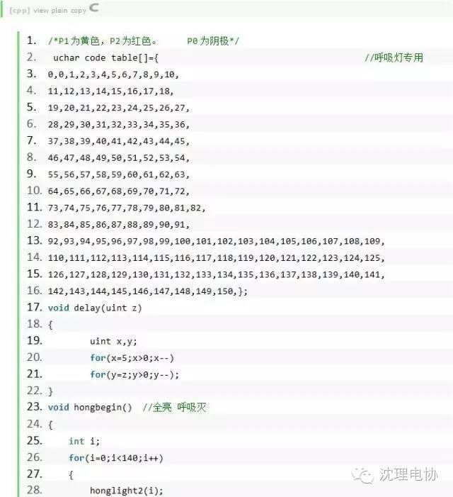
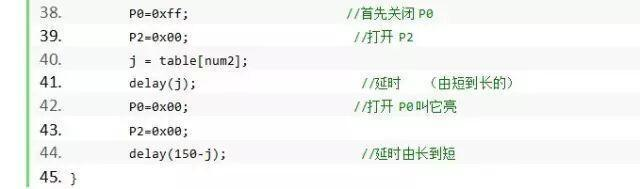
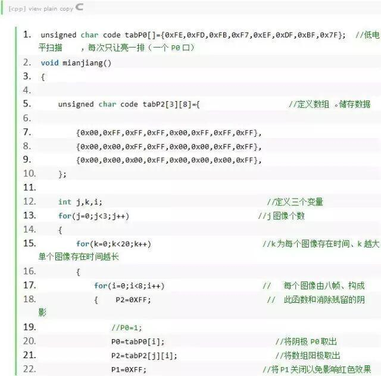
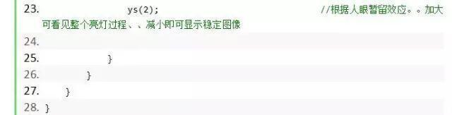

520爱她就送她光立方
如果你错过了那段黄金时期，也没关系，今天我们再来回顾一下当初的作品吧。




看了上面的图片，你应该明白为什么这么说了。好了，下面再说说怎样具体怎么做

说实话当年做的时候什么东东，只知道，每个单片机程序里面都有个while(1)。下面是，这个光立方程序主要就是在while（1）里面循环各种现实效果。


2.呼吸灯
说是呼吸灯，渐亮、渐灭的，说的那么高大上，其实就是PWM，再说的土一点就是控制一个周期内的导通时间，周期内的导通时间逐渐增加，自然就越来越亮。逐渐减小，自然就越来越暗，直到完全熄灭。这个东西如果你用STC12来说的话，其实可以非常简单，就是一个D/A转换。将数字信号，转换成模拟信号。如果你当时直接用的89C52，52是没有D/A转换芯片的，也可以用的软件模拟PWM，其实就是延时的原理。下面是实现的部分代码。

首先我们知道，动画是由图片来快速播放形成的，光立方依靠的也是这个原理。




信息部/黄志勇